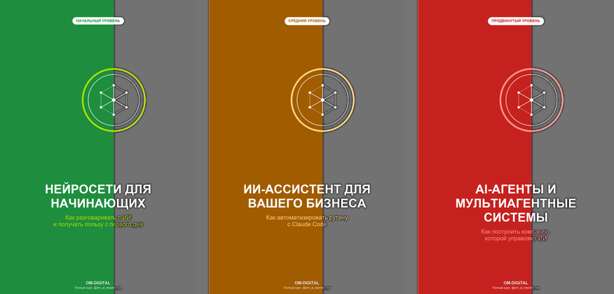

Превью: морской фон за карточками книг (было: плоский чёрный фон → станет: тёмно-синее море с переливами и волнами)

AI Studio
Книги OM-Digital
Бесплатные книги о работе с Claude и AI-агентами, включая разбор кейса Карманного Доктора
Чёрные полосы за обложками (там, где раньше лежал текст названий) стали полупрозрачными — сквозь них видно анимированное тёмно-синее море (переливы цвета + плавные волны), текст остаётся тёмной полупрозрачной подложкой поверх моря для контраста.